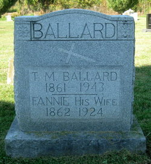
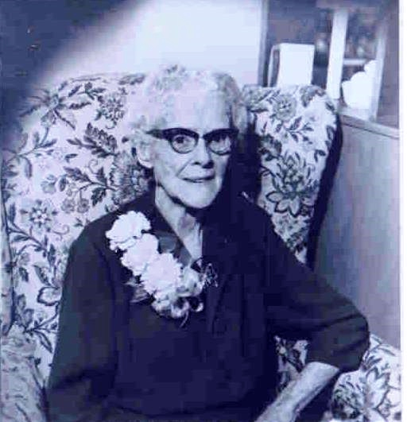
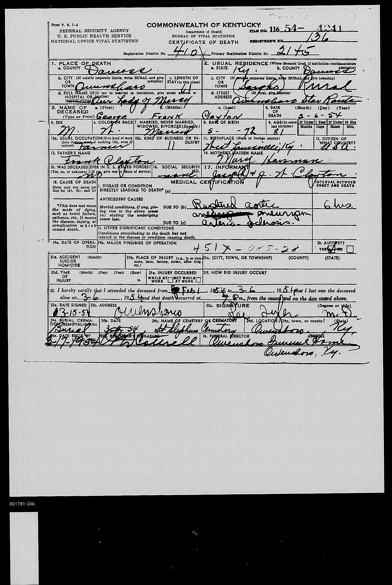
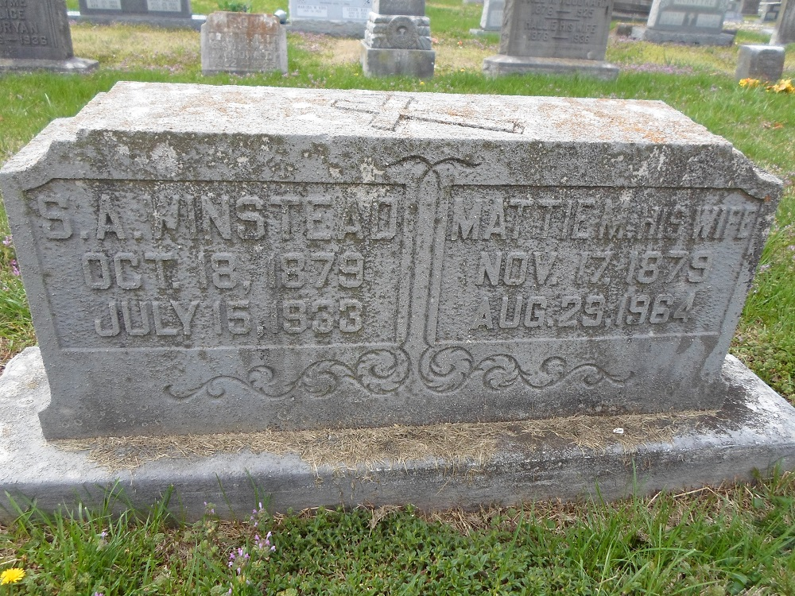
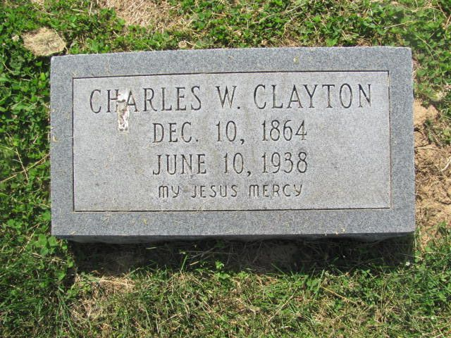
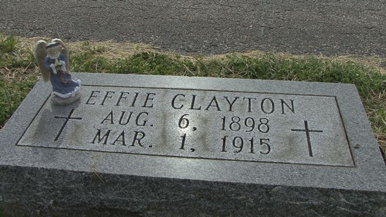

106. Thomas H BALLARD [scrapbook] (Mary Melvina CLAYTON , John Jack , Joseph , Francis ) was born on 30 Nov 1853 in NELSON County, Kentucky. He died 1 on 21 Feb 1928 in Nelson County, KENTUCKY. He was buried in New Hope, Kentucky.

76. John Gregory CLAYTON (James C
, John Jack
, Joseph
, Francis
) was born in Nov 1849 in Nelson County, Kentucky. There were other parents.
|
John married Catherine LIVESS "KATE" in 1879 in OWENSBORO KY. |
They had the following children.
178 F i Mary L CLAYTON. 179 M ii Thomas CLAYTON. 180 M iii Joseph CLAYTON. + 181 M iv Alphonsino M CLAYTON was born on 23 Nov 1891. He died on 25 Dec 1926. 182 F v Catherine L CLAYTON. 183 M vi James V CLAYTON. 184 F vii May C CLAYTON.
106. Thomas H BALLARD [scrapbook] (Mary Melvina CLAYTON , John Jack , Joseph , Francis ) was born on 30 Nov 1853 in NELSON County, Kentucky. He died 1 on 21 Feb 1928 in Nelson County, KENTUCKY. He was buried in New Hope, Kentucky. |
|
Thomas married Frances Malvina CLAYTON "Fannie" [scrapbook], daughter of James Carlan CLAYTON and Elizabeth Ellen DAWSON. Fannie was born on 22 Aug 1862 in Nelson County, Kentucky. She died on 13 Dec 1924 in Louisville. She was buried in Holy Cross Cemetery, Marion County, KY.
|
 |
They had the following children.
185 F i
Ella Mary BALLARD was born in 1894. 186 F ii
Victoria BALLARD was born in 1883.
107. Maria Jane "Ty" BALLARD (Mary Melvina CLAYTON , John Jack , Joseph , Francis ) was born 1 on 26 Jul 1856 in NELSON County, Kentucky. She died on 30 Jun 1936 in Louisville, JEFFERSON CO KY. She was buried in Jun 1936 in Saint Thomas Cemetery, Nelson County, Kentucky. |
Ty married 1 Edward RHODES on 14 Sep 1874 in Nelson County, KENTUCKY. |
They had the following children.
123. DR John Milburn CLAYTON [scrapbook] (Francis Lemuel
, John Jack
, Joseph
, Francis
) was born on 26 Dec 1865 in Holy Cross, Marion County, Ky. He died 1 on 3 Apr 1951 in Our Lady Of Mercy Hospital, Owensboro, Daviess, KY. He was buried on 5 Apr 1951 in St Alphonsus Cemetery, St Joseph, Ky.
|
 |
John married Mary Monina THOMPSON "MAMA DEAR" [scrapbook], daughter of Julian Emmanuel THOMPSON and Katherine Ellen LUCKETT "KATE", on 14 Feb 1900. MAMA DEAR was born on 10 Oct 1879 in Curdsville, Daviess, Kentucky. She died on 28 Dec 1974 in OUR LADY OF MERCY HOSPITAL OWENSBORO KY. She was buried in St Alphonsus Cemetery, St Joseph, Ky.
|
 |
They had the following children.
+ 188 F i Elizabeth Ann "BESSIE" CLAYTON was born on 13 Jan 1901. She died on 6 Oct 1933 from ACUTE ENCEPHALITIS. + 189 M ii Charles Lemuel "UNCLE CHARLIE" CLAYTON was born on 2 Mar 1903. He died on 9 Dec 1979. + 190 M iii Clellan Stirman "STIRMAN" CLAYTON was born on 28 Jul 1907. He died on 26 Aug 1978. + 191 F iv Dorothy Marie "DOT" CLAYTON was born on 5 Dec 1915. She died on 8 Dec 2002.
128. Archibald Douglas CLARKE (Francis Lemuel , John Jack , Joseph , Francis ) was born on 7 Feb 1891 in LOUISVILLE, Kentucky. He died on 2 Apr 1972 in LAGUNA HILLS, California. |
Archibald married Mona Gwendolyn HEASTON. Mona was born on 13 Apr 1894 in BINGHAM CANYON, Utah. She died on 6 Nov 1896 in BRUSSELS, BELGIUM. |
They had the following children.
192 M i Douglas Lane CLARKE. 193 M ii Clayton Heaston CLARKE.
135. Frances Malvina "Fannie" CLAYTON [scrapbook] (James Carlan , Joseph , Joseph , Francis ) was born on 22 Aug 1862 in Nelson County, Kentucky. She died on 13 Dec 1924 in Louisville. She was buried in Holy Cross Cemetery, Marion County, KY.
|
Fannie married Thomas H BALLARD [scrapbook], son of James Proctor BALLARD and Mary Melvina CLAYTON. Thomas was born on 30 Nov 1853 in NELSON County, Kentucky. He died 1 on 21 Feb 1928 in Nelson County, KENTUCKY. He was buried in New Hope, Kentucky. |
|
They had the following children.
194 F i Ella Mary BALLARD is printed as #185. 195 F ii Victoria BALLARD is printed as #186.
141. George Francis "FRANK" CLAYTON [scrapbook] (Frank Lemuel , Joseph , Joseph , Francis ) was born on 18 May 1872 in DAVIESS CO KY. He died on 6 Mar 1954 in DAVIESS CO KY. He was buried in St Stephens Cemetery, Owensboro. |
 |
They had the following children.
196 F i
Mary B CLAYTON was born in 1908. 197 M ii
Joseph F CLAYTON was born in 1910.
144. Martha M "Mattie" CLAYTON [scrapbook] (Frank Lemuel , Joseph , Joseph , Francis ) was born on 17 Nov 1879 in Daviess County KY. She died on 29 Aug 1964 in Mater Dolorosa Cemetery, LITCHFIELD ROAD OWENSBORO, Kentucky. |
 |
Mattie married Steven Archibald WINSTEAD "Archie" [scrapbook], son of Steven Hall WINSTEAD and Mary Frances CAMBRON. Archie was born on 18 Oct 1879. He died on 15 Jul 1933. He was buried in Matar Dolorosa Cemetery, Owensboro, Ky. |
 |
They had the following children.
+ 198 M i Francis Martin WINSTEAD was born on 7 Apr 1910. He died on 9 Jan 1996.
149. Charles W CLAYTON [scrapbook] (John M
, Charles C
, Joseph
, Francis
) was born on 10 Dec 1864. He died on 10 Jun 1938 in Davies COUNTY. He was buried in St Alphonsus Cemetery, St Joseph, Ky. |
 |
Charles married Jennie V. Jennie was born in Oct 1867. |
They had the following children.
199 M i Robert CLAYTON. 200 F ii Eula CLAYTON. 201 F iii
Effie CLAYTON [scrapbook] was born on 6 Aug 1898. She died on 1 Mar 1915. She was buried in St Alphonsus Cemetery, St Joseph, Ky.
Effie was counted in a census 1 in 1900 in West Louisville Ky.
155. Gregory C CLAYTON (Edward Pierce , Charles C , Joseph , Francis ) was born on 15 May 1870 in BEECH GROVE, MCCLEAN CO, Kentucky. He died on 18 Apr 1943 in CHICAGO, COOK CO, Illinois. |
Gregory married Anna Anninsia MACKEY on 3 Apr 1894 in ST BENEDICT CATHOLIC CHURCH, BEECH GROVE, MCCLEAN CO, Kentucky. |
They had the following children.
+ 202 M i Jerome Gilbert CLAYTON was born on 30 Sep 1897. He died on 24 Dec 1955. 203 F ii
Asia Beatrice CLAYTON was born on 15 Jan 1895 in BEECH GROVE, MCCLEAN CO, Kentucky. She died on 16 Sep 1954 in DIXON, LEE CO, Illinois.
Asia married Wayne WHITE on 4 Aug 1915 in CLAY CO, Arkansas. Wayne was born in 1893 in ST LOUIS, Missouri. He died after 1930.
Wayne obtained a marriage license on 4 Aug 1915 in CLAY CO, ARK.
Asia also married William Henry STANLEY JR on 18 Jun 1934 in ST MALACHY CATHOLIC CHURCH, CHICAGO. William was born on 1 Mar 1887 in DIXON LEE CO, Illinois. He died on 14 Nov 1958 in DIXON LEE CO, Illinois.
William obtained a marriage license on 18 Jun 1934 in ST MALACHY CATHOLIC CHURCH, CHICAGO.204 F iii
Mary Elizabeth CLAYTON was born in 1898/1901 in BEECH GROVE, MCCLEAN CO, Kentucky. She died after 1943 in CHICAGO, COOK CO, Illinois. 205 M iv
Carmel Joseph CLAYTON was born on 11 Nov 1900 in BEECH GROVE, MCCLEAN CO, Kentucky. He died on 22 Jan 1950 in CHICAGO, COOK CO, Illinois. 206 F v
Dorothy Anna CLAYTON was born on 7 Oct 1902 in BEECH GROVE, MCCLEAN CO, Kentucky. She died after 1974.
Dorothy married Daniel Leo WARREN on 21 Aug 1926 in ST MALACHY CATHOLIC CHURCH, CHICAGO. Daniel was born on 5 Aug 1902 in CHICAGO. He died on 26 Jun 1958 in ST ANNES HOSPITAL, CHICAGO. 207 F vi
Mattie Magdaline CLAYTON was born on 1 Oct 1904 in BOYDSVILLE, CLAY CO, Arkansas. She died after 1955. 208 F vii
Aloysia Gertrude CLAYTON was born on 30 Aug 1907 in RECTOR CLAY CO AR. She died on 7 Apr 1974 in ELMURST, DUPAGE CO, Illinois.
Aloysia married Joseph Thomas BAY SR on 1 Mar 1927 in ST MALACHY CATHOLIC CHURCH, CHICAGO. Joseph was born on 30 Apr 1907 in CHICAGO, COOK CO, Illinois. He died on 17 Nov 1957 in ELMHURST, DUPAGE CO, Illinois.
160. George Rude CLAYTON (George Maxwell , Charles C , Joseph , Francis ). |
George married Mary Josephine WILLETT. Mary was buried about 1970 in OWENSboro, Daviess, Kentucky. |
They had the following children.
209 M i
George Clestern CLAYTON was born on 13 Jun 1903. He died on 27 Jan 1970.


{kind=link}
{kind=link}
{kind=link}
{kind=link}
{kind=link}
{kind=link}